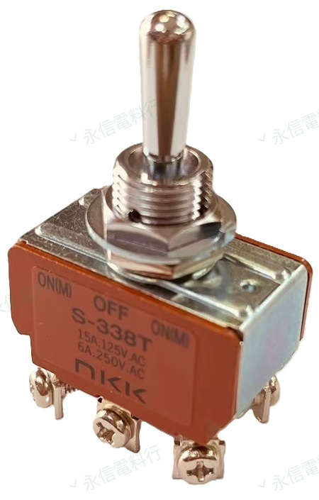

商品照片已套用永信電料行淡綠灰斜向浮水印；點選縮圖可切換照片角度。
NKK SWITCHES
搖頭開關｜S300 系列
S-338T DPDT
NKK Switches S-338T 搖頭開關，本批實物可辨識 DPDT、(ON)-OFF-(ON) 與 15A @ 125VAC。維修替換時請同步核對操作動作、端子數與實物額定標示。
型號S-338T
切換動作(ON)-OFF-(ON)
極數DPDT
125VAC 銘牌15A
商品照片4 張
規格核對提醒
括號內的 (ON) 表示瞬時／復歸位置。 本頁額定值依本批實物銘牌整理；同型號不同年代、端子或認證版本可能有標示差異，實際替換請以手上商品銘牌、相對應原廠資料與現場需求核對。
本網站不顯示即時庫存、價格與交期；實際供應請另行確認。
PRODUCT OVERVIEW
切換與規格核對重點
- 品牌：NKK Switches
- 本體型號：S-338T；原廠料號常用寫法 S338T
- 產品類型：搖頭開關
- 極數／接點形式：DPDT
- 切換動作：(ON)-OFF-(ON)（雙側復歸）
- 端子：6 點，螺絲端子
NAMEPLATE INFORMATION
實物規格表
品牌NKK Switches
本體標示型號S-338T
原廠料號寫法S338T
產品類型搖頭開關
系列S300 系列
極數／接點形式DPDT
端子數6 點
切換段位3 段
切換動作(ON)-OFF-(ON)｜雙側復歸
125VAC 銘牌額定15A @ 125VAC
250VAC 銘牌額定6A @ 250VAC
端子形式螺絲端子
商品照片4 張
額定值以本批實拍商品銘牌為主要依據，並與 NKK 原廠系列資料交叉核對。不同生產年代或版本可能有差異；實際規格請依產品銘牌、對應原廠型錄及現場需求核對。